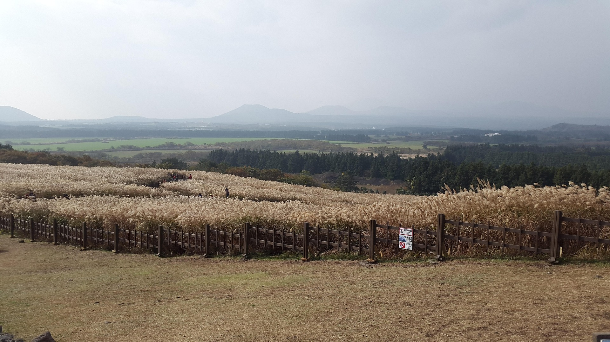

은빛 물결이 춤추는 10월의 선물

제주의 가을은 그 어느 계절보다 깊고 풍요롭습니다. 산굼부리와 새별오름을 가득 채운 은빛 억새 물결은 보는 이들의 탄성을 자아내기에 충분합니다. 억새 사이로 부는 바람 소리를 들으며 걷다 보면 일상의 스트레스는 어느덧 사라지고 마음의 평온이 찾아옵니다.
특히 해 질 녘, 노을빛을 받아 황금색으로 물드는 억새밭은 "인생 사진"을 남기기에 가장 완벽한 장소입니다. 이 시기에만 만날 수 있는 특별한 풍경을 놓치지 마세요.